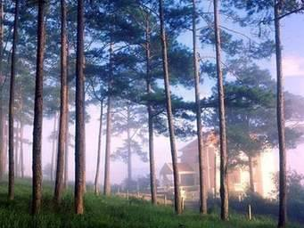
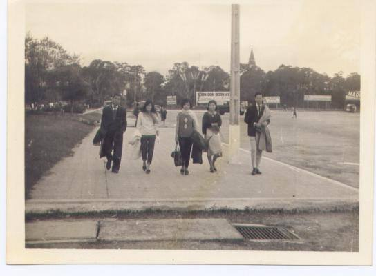
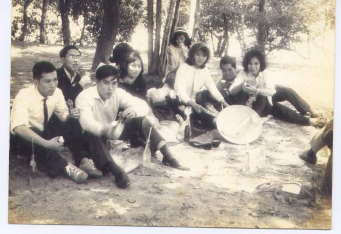

Vâng, Đà Lạt trong trí nhớ của chúng ta luôn luôn kèm theo một chút lạnh lẽo, một chút sương mù và rất nhiều ấm áp nếu có một chút tình yêu ở đó.

Có thể gọi Đà Lạt là thành phố thơ mộng, vì cảnh trí, vì khí hậu của Đà Lạt. Rừng Ái Ân, hồ Than Thở, cái cách người ta đặt tên cho rừng, cho hồ ấy, không thơ mộng sao?
Đà Lạt có bốn mùa lạnh. Lạnh, nhưng vẫn có những ngày bạn có thể mặc phong phanh một chiếc áo thung hay một cái chemise, ra đường “Đưa em xuống phố trưa nay, mà lòng ngây ngất cơn say”. Nhưng đó là “một cuộc phiêu lưu nhỏ”. Vì, chỉ cần một đám mây bay qua che bớt mặt trời, một trận gió từ những khu rừng xa hơn nữa thổi lại, là cái lạnh đã ùa vào cơ thể thay cho khoảng nắng ấm, làm bạn phải co người lại. Hoặc nếu có hai người thì đi sát gần nhau hơn tìm hơi ấm… Cái đi sát vào nhau ấy, cái co mình vì lạnh ấy không hẳn vì rét mà chính là cái cách, là lúc, người ta thưởng thức cái lạnh của Đà Lạt. Phải không, thưa các bạn?


Cái lạnh của Đà Lạt khác với cái lạnh của Huế hay Hà Nội. Cái lạnh ở Hà Nội hay Huế là mộc cái lạnh buốt. Cái lạnh ở Đà Lạt là cái lạnh mát. Huế nhỏ hơn Hà Nội. Đà Lạt nhỏ hơn Huế. Cái nhỏ bé của Đà Lạt có một vẻ gì đó, tựa như nằm lọt trong chiếc nôi có núi rừng bao quanh. Và cái lạnh dường như muốn ru người ta lại gần nhau hơn. Có lẽ vì thế, người ta cho rằng Đà Lạt là nơi lý tưởng để hưởng tuần trăng mật vậy.
Trước 1954, thi ca của chúng ta hình như chỉ có một bài ngợi ca Đà Lạt thực sự quan trọng, đó là bài “Đà Lạt Trăng Mờ” của Hàn Mặc Tử:
Đây phút thiêng liêng đã khởi đầu
Trời mơ trong cảnh thực huyền mơ
Trăng sao đắm đuối trong sương nhạc
Như đón từ xa một ý thơ
Ai hãy làm thinh chớ nói nhiều
Để nghe dưới đáy nước hồ reo
Để nghe tơ liễu run trong gió
Và để nghe trời giải nghĩa yêu
Sau năm 1975, Đà Lạt gần như tràn ngập trên sách, báo ở trong nước. Người ta cũng nhắc tới “dã quỳ” và “hoa sữa” như hai biểu tượng của Đà Lạt và Hà Nội. Những bài thơ, bài nhạc ấy, có bao nhiêu bài sẽ tồn tại được với thời gian, chúng ta chưa thể biết được. Riêng Đà Lạt thì dù, người ta có được sinh ra ở đó, bỏ đi từ đó, hay chỉ là những du khách ghé thăm một đôi lần, nó cứ vẫn là điều làm cho lòng người bồi hồi mỗi khi nghe nhắc lại hay khi nghe một bài hát, đọc một bài thơ.
Ở đấy, người ta không thể quên những cơn mưa phùn làm ướt những con dốc nhỏ, đôi khi, người ta phải nắm tay nhau đi khỏi ngã. Ở đấy, có những cơn gió thơm nức mùi nhựa thông. Ở đấy, có lúc người ta tưởng như mình đi trong hơi thở của núi rừng. Ở đấy, cũng có một thời chiến tranh đã đi qua, có những ngày “Mặt trời không mọc ở phía đông, không lặn ở phía tây”. Đó là ngày “Nguời yêu dấu của tôi đã chết”.
Đó cũng là nơi anh đã cho em biết thế nào là những ngọt ngào của tình ái gần và đắng cay lúc xa. Cũng ở đó, chúng ta đã có tất cả và cùng ý nghĩa ấy, khi không còn nhau nữa, chúng ta đã mất hết.
Đà Lạt, chỉ nghe nhắc đến tên thôi, là cũng đủ thấy lòng bồi hồi xúc động. Chẳng khác gì mối tình đầu đời tới cuối kiếp không quên, dù tình lúc nào cũng cùng một lúc ban cho chúng ta dư vị ngọt ngào và cay đắng.
Đà Lạt tràn ngập trong văn thơ, trong âm nhạc của chúng ta. Cùng một lý do đó, Đà Lạt tràn ngập tâm hồn chúng ta, cho dù chúng ta có sinh ra ở đó, bỏ đi từ ở đó hay chỉ là một du khách, hoặc ít hơn, Đà Lạt chỉ nằm trong mơ tưởng, ước ao được nhìn thấy, được bước vào…Đà Lạt vẫn là điều làm chúng ta rộn ràng mỗi khi nghe nhắc đến.
Thế giới ấy có khác gì thế giới tình yêu vừa phóng lớn, vừa thu nhỏ. Đà Lạt hơn một trăm tuổi, Đà Lạt có già đi nhưng Đà Lạt vẫn đẹp và trẻ lại bằng những tuổi tiên nga mới lớn. Đà Lạt thơm trong gió thông thầm thì, Đà Lạt vẫn nồng nàn tình ái, rạo rực mộng mơ.
Hoa mimosa vàng óng
Đang kheo sắc đẹp nắng mai
Em yêu-người anh đã chọn
Tóc huyền vừa cắt ngang vai
Lá biêng biếc mang mầu bạc
Em đôi má trắng hây hồng
Góp sao trời vào trong mắt
Nên trời Đà Lạt sương không. (Trần Xuân Dũng)
Hà Nội nổi tiếng là một thành phố có nhiều hồ và cây xanh. Đà Lạt cũng có nhiều hồ. Và không những chỉ có nhiều cây xanh mà còn được cả một thiên nhiên xanh mướt ôm gọn vào lòng trong tiếng ru bất tận của rừng thông và hương hoa tình ái.
Dù trong hoàn cảnh nào thì tình yêu đối với đất, với người không hề khô cạn, cũng chẳng đổi thay.
Thơ ta vần gieo từng đoạn
Nhưng tình liền lạc mênh mông
Đêm đêm thời gian dần mất
Lúc sương tan, nắng lên hồng…
Anh vẫn yêu em bằng tình yêu của năm mười tám, đôi mươi. Anh vẫn nhớ từng cơn gió lướt thướt trên những rặng thông khi mùa thu trở lại. Hồ Xuân Hương đối với anh vẫn là tấm gương soi. Và bằng đôi mắt tâm tưởng, anh vẫn nhìn thấy em trong đó. Những thác Cam Ly, những hồ Than Thở, những Thung Lũng Tình Yêu…Những tên gọi không ngớt mang âm huởng của những hồi chuông ngân nga, vẫn nhắc lại cho chúng ta một thời biết yêu, một thời hạnh phúc…
Mùa lạnh Cali 2011
Bích Huyền
Chú thích: Hai bức hình đen trắng: Những trại hè của sinh viên Saigon ở Đà Lạt. khỏang những năm 1965-66. (Có tôi "trong đám xuân xanh ấy! Hi hi...)